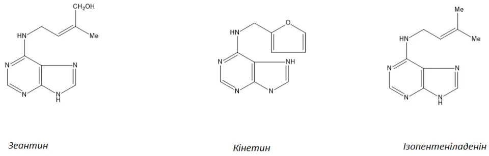
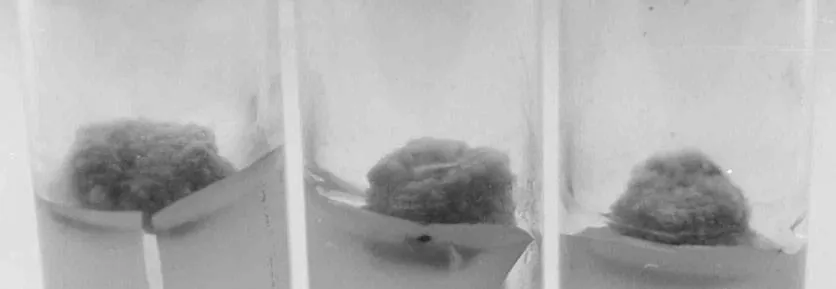
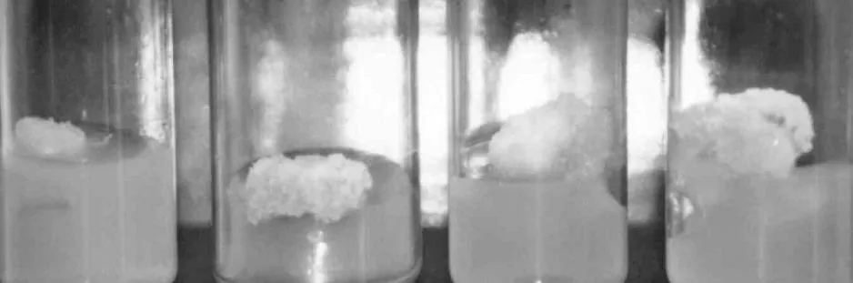
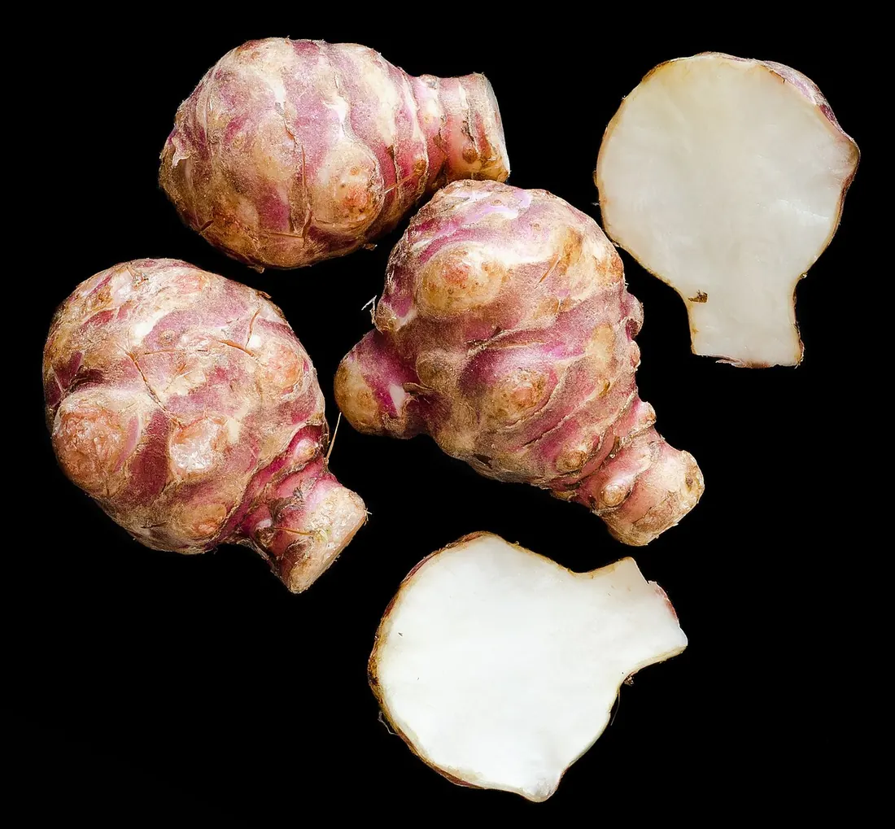
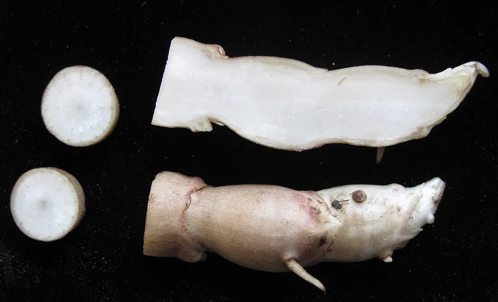
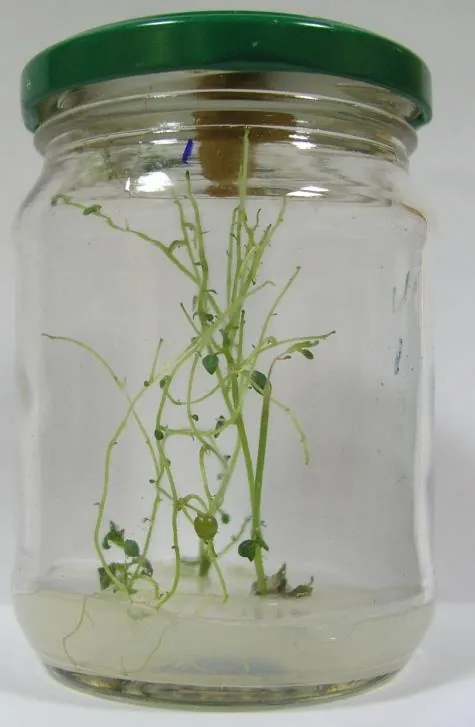
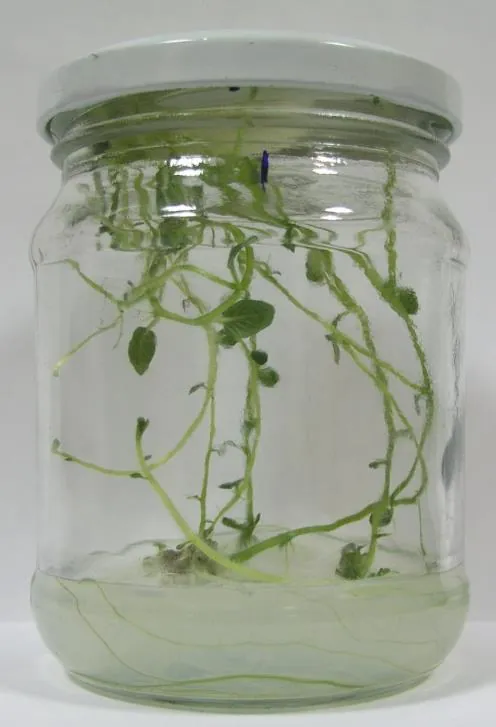
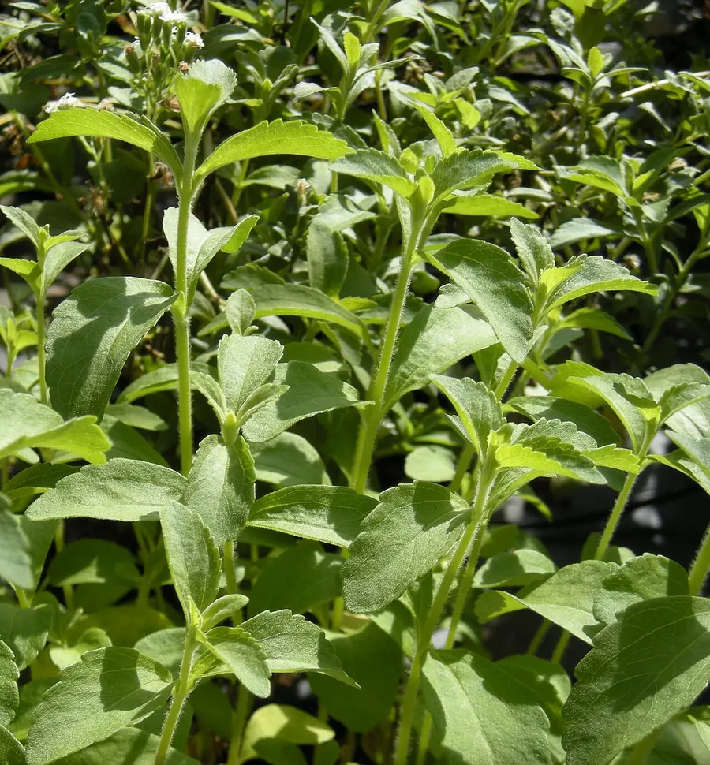

01Мета і план
Мета
Навчитися оцінювати біологічну активність регуляторів росту за реакцією ізольованих тканин in vitro (у пробірці, поза організмом) і порівняти дію ауксинів, цитокінінів та гіберелінів на ріст і розвиток мікроживців.
Знадобиться
Ламінар-бокс (стерильна шафа з потоком очищеного повітря), пінцети, ланцети, спиртівка, чашки Петрі, пробірки й банки з живильними середовищами (табл. 9–11), калюс сої й топінамбура, рослини-регенеранти картоплі, стевії або гвоздики, термостат, світлова культуральна кімната, ваги.
Що дізнаєтеся
- чому калюс сої — тест-система на цитокініни, а топінамбура — на ауксини;
- як побудувати криву «доза — відповідь» і знайти EC50 та «еквівалентну концентрацію» невідомого препарату;
- як ауксин, цитокінін і гіберелін змінюють корені, кущіння й довжину міжвузлів;
- як рахують індекс росту й коефіцієнт розмноження.
02Теоретичні відомості
П'ять груп фітогормонів
Регулятори росту — речовини, які в дуже малих концентраціях (соті й тисячні частки міліграма на літр) вмикають або гальмують ріст і розвиток рослини. Природні регулятори називають фітогормонами; їхні синтетичні аналоги (кінетин, 6-БАП, 2,4-Д) широко використовують у культурі тканин. Посібник (с. 127) коротко характеризує п'ять груп:
Індукують поділ і дедиференціацію клітин (втрату спеціалізації, повернення до «ембріонального» стану), утворення кореневих зачатків, регулюють соматичний ембріогенез і регенерацію органів з калюсу. Природний — ІОК (індоліл-3-оцтова кислота); синтетичні — 2,4-Д (2,4-дихлорфеноксиоцтова кислота), НОК (α-нафтилоцтова кислота).
Індукують клітинний поділ, затримують старіння, активують диференціювання хлоропластів, пробуджують пазушні бруньки, регулюють ріст соматичних зародків. Природний — зеатин; синтетичні — кінетин (6-фурфуриламінопурин), 6-БАП (6-бензиламінопурин).
Стимулюють вегетативний ріст, розтягнення й поділ клітин, прискорюють проростання насіння, сприяють утворенню партенокарпічних (безнасінних) плодів. У культурі найчастіше — ГК3, гіберелова кислота.
Абсцизова кислота пов'язана зі станом спокою бруньок і насіння, опаданням квіток і плодів, старінням і дозріванням органів.
Газоподібний гормон: прискорює дозрівання плодів, стимулює опадання листя. У закритих культуральних посудинах може накопичуватися й гальмувати ріст.
Докладніше про синтез, транспорт і рецептори гормонів — у Конспекті: ауксини, цитокініни, гібереліни, взаємодія гормонів; про ріст рослин загалом — «Ріст і розвиток».


Баланс ауксинів і цитокінінів визначає долю тканини
У культурі in vitro важить не лише кількість кожного гормону, а їхнє співвідношення. Ще Ф. Скуг і К. Міллер (1957) показали на калюсі тютюну: коли ауксину значно більше, ніж цитокініну, калюс утворює корені; за приблизно рівного вмісту — росте недиференційованим калюсом; коли переважає цитокінін — закладає пагони (рис. нижче). На цьому правилі тримаються і біотести, і мікроклональне розмноження (тема 8).
Біотест: тканина як «прилад» для вимірювання гормону
Біотест (біологічна проба) — визначення активності речовини за реакцією живого об'єкта. Хімічно виміряти кілька мікрограмів гормону в екстракті важко, а тканина, ріст якої повністю залежить від цього гормону, відгукується вже на соті частки мг/л. Такий об'єкт називають тест-системою. Головна вимога — щоб власного (ендогенного) гормону в тканині не було: тоді весь приріст зумовлений тим, що ми додали в середовище.
- Калюс сім'ядолей сої (Glycine max (L.) Merr.) дуже чутливий до цитокінінів: без них ріст зупиняється, з ними — повністю відновлюється (с. 128). Середовище (табл. 9) містить ауксин ІОК 2 мг/л, тож єдиний чинник, що змінюється, — цитокінін. Класичний біотест на цитокініни (Miller, 1965).
- Калюс бульб топінамбура (Helianthus tuberosus L.) чутливий до ауксинів: без них ріст призупиняється (с. 129). Середовище (табл. 10) містить кінетин 0,2 мг/л, а ауксин замінюють досліджуваним препаратом: якщо калюс росте — препарат має ауксинову дію.








Склад середовищ для біотестів
Нижче — табл. 9 і 10 посібника (с. 128, 130). У друкованих таблицях концентрації регуляторів «з'їхали» в рядки мінеральних компонентів; ми читаємо їх так: для сої — 0,1 і 0,5 мг/л кожного цитокініну, для топінамбура — 0,5; 1,0 і 1,5 мг/л кожного ауксину. Контроль — те саме середовище без досліджуваного гормону. Середовища автоклавують (стерилізують парою під тиском) 25 хв при 1 атм надлишкового тиску.
| Компонент | Соя (ЛР 35, табл. 9) | Топінамбур (ЛР 36, табл. 10) |
|---|---|---|
| Макросолі | за Міллером, 100 мл | МС (середовище Мурасіге — Скуга), 100 мл |
| Мікросолі | за Міллером, 1 мл | МС, 1 мл |
| Fe-хелат (залізо, зв'язане з ЕДТА — етилендіамінтетраоцтовою кислотою) | 5 мл | 5 мл |
| Вітаміни | за Уайтом, 1 мл; гліцин 2 мг/л | МС, 1 мл; мезоінозит 100 мг; гідролізат казеїну 500 мг |
| Фоновий гормон | ІОК 2 мг/л | кінетин 0,2 мг/л |
| Досліджуваний гормон | кінетин, 6-БАП, зеатин: 0,1 і 0,5 мг/л | ІОК, 2,4-Д, Івін: 0,5; 1,0; 1,5 мг/л |
| Сахароза / агар | 20 г / 6 г | 20 г / 8 г; вода 870 мл |
| pH; умови | 5,6–5,8; термостат +25–26 °C, темрява, вологість 60–70 % | 5,6–5,8; термостат +26–28 °C, темрява, вологість 60–70 % |
Івін — вітчизняний синтетичний регулятор росту (N-оксид 2,6-диметилпіридину); у ЛР 36 його ауксинову активність порівнюють з природною ІОК і синтетичною 2,4-Д.
Крива «доза — відповідь» і рівняння моделі
Ріст калюсу оцінюють за приростом маси (тема 3, с. 73):
W0 — початкова маса інокулюму (шматочка калюсу, який висаджують), Wt — маса через t діб. Зважують що 7 діб, у шести повторностях. Помножене на 100 %, ΔW дає приріст у відсотках.
Якщо відкласти ΔW проти логарифма концентрації, точки лягають на S-подібну криву: за малих доз ефекту немає, далі він швидко зростає й виходить на насичення, а за надто великих доз ріст гальмується (супраоптимальна дія; для 2,4-Д — аж до гербіцидного ефекту). Посібник дає цю закономірність якісно; у моделі ми описуємо її наближено: питома швидкість росту μ (на скільки частин зростає маса за добу) залежить від концентрації за рівнянням Гілла з гальмівним множником,
C — концентрація гормону, мг/л; μ0 — швидкість росту без гормону (для сої ≈ 0, для топінамбура = 0); μmax — найбільша можлива (≈ 0,09 доба−1); EC50 (напівмаксимальна ефективна концентрація) — доза, що дає половину максимального ефекту: що вона менша, то активніша речовина; n — коефіцієнт Гілла (крутизна кривої); Ki, m — положення й крутизна супраоптимального гальмування.
Маса росте логістично (спочатку експоненційно, далі сповільнюється через виснаження середовища), з лаг-фазою τ ≈ 4 доби, поки клітини «вмикаються» в поділ:
Wmax — найбільша маса, яку може дати калюс у посудині (1,4–1,6 г).
Коли криву для відомої речовини (стандарту) побудовано, за нею визначають активність невідомого препарату X: знаходять концентрацію стандарту, що дає такий самий ΔW, і кажуть, наприклад, що екстракт містить «0,07 мг/л у кінетин-еквіваленті». У моделі це можна зробити для «зразка X».
Значення EC50 у моделі — навчальні оцінки, що відтворюють відомий порядок активності: для сої зеатин > 6-БАП > кінетин, для топінамбура 2,4-Д > ІОК > Івін. Справжні значення залежать від лінії калюсу, середовища й терміну досліду, тому в лабораторії криву будують заново для кожної серії.
Мікроживці на середовищах з різними гормонами
Мікроживець — відрізок пагона рослини-регенеранта (рослини, отриманої in vitro) з одним-двома вузлами й пазушними бруньками. У ЛР 37 мікроживці картоплі (Solanum tuberosum L.), стевії (Stevia rebaudiana Bertoni) або гвоздики (Dianthus caryophyllus L.) садять на середовище МС з одним із трьох регуляторів (табл. 11, с. 131): варіанти № 1–4 — контроль і ІОК, № 5–7 — кінетин, № 8–10 — гіберелова кислота, у концентраціях 0,1; 0,5 і 1,0 мг/л. Культивують при +25–26 °C, фотоперіоді (тривалості світлового дня) 14 год, освітленості 1000 лк, вологості 60–70 %.
- ІОК прискорює закладання й ріст коренів; надлишок дає калюс біля основи й коротші корені.
- Кінетин знімає апікальне домінування (пригнічення пазушних бруньок верхівковою) — пагін кущиться, міжвузля коротшають, корені майже не утворюються.
- Гіберелова кислота розтягує міжвузля: пагони тонкі, витягнуті, листки дрібніші й блідіші (див. рис. 23).
Ріст оцінюють показниками ЛР 34 (с. 127): індекс росту — відношення кінцевої довжини рослини до довжини вихідного експлантата; кількість і довжина міжвузлів; коефіцієнт розмноження — скільки рослин-регенерантів можна отримати з одного експлантата за певний час.
Lt — довжина пагона на t-ту добу, L0 — довжина висадженого мікроживця (≈ 10 мм); Nживців — скільки одновузлових живців можна нарізати після пасажу (у моделі — кількість вузлів головного й пазушних пагонів плюс верхівка). У моделі вплив гормону наближено описано насиченням E = C/(C + K½) з K½ = 0,2–0,3 мг/л; напрями ефектів — за посібником.






03Інтерактивна модель
Дві вкладки — дві частини теми. Оберіть параметри й натисніть «▶ Запустити»: модель пройде дослід у прискореному часі, а щотижневі «зважування» з'являться на графіках точками. Торкніться пробірки чи банки, щоб роздивитися її зблизька й побачити показники. Пояснення формул — у розділах «Крива доза — відповідь» і «Мікроживці».
Калюс у термостаті: ріст залежно від дози гормону
Ряд пробірок з однаковим інокулюмом і зростаючою концентрацією гормону; праворуч — лупа над вибраною пробіркою.
Тест-система
Досліджувана речовина
Ряд концентрацій
Крива «доза — відповідь»: ΔW на кінець досліду (лінії) і зараз (точки)
Динаміка маси калюсу: щотижневі зважування ± стандартне відхилення
«Як у посібнику» — контроль і концентрації з табл. 9 (соя) чи 10 (топінамбур); «калібрувальний ряд» — десятикратні розведення від 0,001 до 10 мг/л, зручні для кривої на логарифмічній шкалі. Пунктир на кривих — дві інші речовини для порівняння. Стандартне відхилення — міра розкиду між шістьма повторностями.
Мікроживці на стелажі культуральної кімнати
Контроль і три концентрації вибраного регулятора (табл. 11); лампи вмикаються на 14 годин на добу.
Рослина
Регулятор росту
ІОК — ауксин, кінетин — цитокінін, ГК — гіберелова кислота.
Довжина пагона L(t), точки — облік що 7 діб
Показник на кінець досліду залежно від концентрації
Модель відтворює напрям і порядок ефектів, описаних у посібнику; абсолютні числа — навчальні. Коефіцієнт розмноження K тут — кількість одновузлових живців, які можна нарізати з однієї рослини.
04Хід лабораторних робіт
Робота 35. Ізольована тканина сої як тест-система на цитокініни с. 128–129
Мета: отримати калюсну тканину сої на середовищах з різним вмістом цитокінінів.
- Приготуйте середовища з різним вмістом цитокінінів (табл. 9) і автоклавуйте 25 хв при 1 атм. Контроль — безгормональне середовище.
- У ламінар-боксі висадіть отриману раніше калюсну тканину сої на середовища з різними регуляторами росту.
- Культивуйте в термостаті при +25–26 °C, вологості повітря 60–70 %, без доступу світла.
- Що 7 діб визначайте ростові характеристики калюсу (масу, приріст ΔW — тема 3).
- Наприкінці побудуйте графіки: на горизонтальній осі — номери калюсів (варіанти), на вертикальній — ростові характеристики. Зробіть висновок про вплив різних концентрацій цитокінінів на ріст калюсу сої.
Робота 36. Культура тканини топінамбура як тест-система на ауксини с. 129–130
Мета: отримати калюсну тканину топінамбура на середовищах з різним вмістом ауксинів.
- Приготуйте середовища з різним вмістом ауксинів (табл. 10), автоклавуйте 25 хв при 1 атм. Контроль — безгормональне середовище.
- У ламінар-боксі висадіть калюсну тканину топінамбура на середовища з різними регуляторами.
- Культивуйте в термостаті без світла при +26–28 °C і вологості 60–70 %.
- Що 7 діб визначайте масу, індекс росту, забарвлення й кількість клітин за методом Брауна (підрахунок клітин після мацерації — розділення тканини на окремі клітини — у камері Фукса — Розенталя, тема 3), заносьте в таблицю.
- Побудуйте графіки впливу препаратів ауксинової дії на ріст калюсу; зробіть висновки про дію кожного препарату.
Робота 37. Вплив ауксинів, цитокінінів і гіберелінів на ріст і розвиток мікроживців с. 131
Мета: вивчити вплив регуляторів росту на ріст і розвиток мікроживців стевії, картоплі, гвоздики.
- Приготуйте середовища з досліджуваними регуляторами різної концентрації (табл. 11: ІОК, кінетин, ГК по 0,1; 0,5; 1,0 мг/л на основі МС; сахароза 20 г, агар 8 г, pH 5,6–5,8), автоклавуйте 25 хв при 1 атм.
- У ламінар-боксі ланцетом розділіть рослини-регенеранти на мікроживці.
- Розмістіть мікроживці на середовищах з різними регуляторами.
- Культивуйте в термальній кімнаті при +25–26 °C, фотоперіоді 14 год, освітленості 1000 лк, вологості 60–70 %.
- Що 7 діб визначайте індекс росту, кількість і довжину міжвузлів.
- На 35–40 добу підрахуйте коефіцієнт розмноження, побудуйте графіки дії регуляторів на ріст і розвиток і зробіть висновки.
05Контрольні питання
1. Що таке тест-система і чому калюс сої підходить для визначення цитокінінів?
Тест-система — живий об'єкт, ріст якого залежить від досліджуваної речовини. Калюс сім'ядолей сої не синтезує достатньо власних цитокінінів: без них ріст зупиняється, а з ними відновлюється, тож приріст маси прямо відображає активність доданого цитокініну.
2. Навіщо в середовищі для сої ІОК 2 мг/л, а в середовищі для топінамбура — кінетин 0,2 мг/л?
Для поділу клітин потрібні обидва класи гормонів. Другий гормон дають у постійній, достатній кількості, щоб ріст лімітував лише досліджуваний: у сої — цитокінін, у топінамбура — ауксин.
3. Як обчислити приріст маси калюсу?
ΔW = (Wt − W0)/W0, де W0 — початкова, Wt — кінцева маса. Наприклад, 50 мг → 400 мг: ΔW = 7, тобто приріст 700 %.
4. Що таке EC50 і як за нею порівняти активність речовин?
Концентрація, що дає половину максимального ефекту. Що менша EC50, то активніша речовина: та сама відповідь досягається меншою дозою.
5. Чому за дуже великих концентрацій 2,4-Д калюс росте гірше?
Це супраоптимальна (надоптимальна) дія: надлишок ауксину порушує обмін, стимулює синтез етилену, клітини гинуть і буріють. Великі дози 2,4-Д діють як гербіцид.
6. Як ІОК, кінетин і гіберелова кислота змінюють мікроживець?
ІОК стимулює утворення коренів; кінетин знімає апікальне домінування й викликає кущіння, але гальмує корені; гіберелова кислота видовжує міжвузля.
7. Що таке індекс росту й коефіцієнт розмноження?
Індекс росту — відношення кінцевої довжини рослини-регенеранта до довжини вихідного експлантата. Коефіцієнт розмноження — кількість рослин-регенерантів, яку можна отримати з одного експлантата за певний час.
8. Як визначити ауксинову активність нового препарату?
Замінити ним ауксин у стандартному середовищі для топінамбура. Якщо калюс росте — препарат має ауксинову дію; порівнявши приріст з кривою для ІОК, можна виразити активність в ІОК-еквівалентах.
06Література
- Мельничук, М. Д., & Кляченко, О. Л. (2014). Біотехнологія в агросфері: навчальний посібник. НУБіП України. С. 73, 127–131.
- Skoog, F., & Miller, C. O. (1957). Chemical regulation of growth and organ formation in plant tissues cultured in vitro. Symposia of the Society for Experimental Biology, 11, 118–130.
- Miller, C. O., Skoog, F., Von Saltza, M. H., & Strong, F. M. (1955). Kinetin, a cell division factor from deoxyribonucleic acid. Journal of the American Chemical Society, 77(5), 1392. https://doi.org/10.1021/ja01610a105
- Miller, C. O. (1965). Evidence for the natural occurrence of zeatin and derivatives: Compounds from maize which promote cell division. Proceedings of the National Academy of Sciences, 54(4), 1052–1058. https://doi.org/10.1073/pnas.54.4.1052
- Murashige, T., & Skoog, F. (1962). A revised medium for rapid growth and bio assays with tobacco tissue cultures. Physiologia Plantarum, 15(3), 473–497. https://doi.org/10.1111/j.1399-3054.1962.tb08052.x
- George, E. F., Hall, M. A., & De Klerk, G.-J. (Eds.). (2008). Plant propagation by tissue culture (3rd ed., Vol. 1). Springer. https://doi.org/10.1007/978-1-4020-5005-3